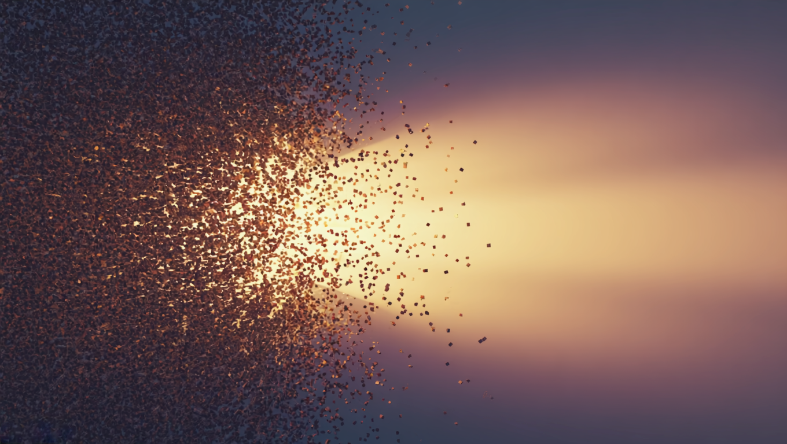

Нейропластичность работает всю жизнь, но перестройка идёт не в момент усилия, а в глубоком сне и отдыхе. Разбираем, как внимание и восстановление вместе меняют мозг.
Больше ста лет назад испанский врач Сантьяго Рамон-и-Кахаль, человек, которого называют отцом нейронауки, вынес мозгу взрослого приговор. Пути проложены, писал он, всё закончено и неизменно, отмереть может, а вырасти заново уже нет. Приговор держался почти век. В учебниках стояло примерно так: до определённого возраста мозг ещё лепится под опыт, а потом застывает, и с каким человек остался, с таким и доживёт. Каждый, кто хоть раз думал «поздно учиться, поезд ушёл», опирался именно на эту старую догму. Сегодня понятно, что держалась она не на доказательствах: заглянуть внутрь живого мозга долго было просто нечем.
Сто лет мозг считали застывшим
Догму про застывший мозг подорвал американский нейробиолог Майкл Мерцених. В восьмидесятые он аккуратно картировал, какие участки коры у обезьяны отвечают за каждый палец, а потом менял пальцу нагрузку и снова снимал карту. Карта переезжала. Зона, которая много работала, разрасталась и захватывала соседние клетки, а участок без работы сжимался. Всё это происходило у взрослых животных, у которых по старым правилам меняться было уже нечему. Позже то же самое увидели у людей: у скрипачей область коры, отвечающая за пальцы левой руки, крупнее обычной, и тем крупнее, чем раньше человек взялся за инструмент.
Способность мозга менять себя под опыт назвали нейропластичностью, и главное открытие последних десятилетий в том, что она не выключается с возрастом. У взрослого она идёт медленнее и требует более честных усилий, чем у ребёнка, у которого мозг перестраивается почти сам от одного факта жизни. Но она никуда не уходит. Человек, который в шестьдесят берётся за язык, инструмент или новое ремесло, физически меняет ткань собственной головы, не только запоминает слова. Разница с детством одна: взрослому нужно самому дать мозгу сигнал, что вот это важно и это стоит закреплять. Ребёнку такой сигнал даёт сама новизна мира, взрослому приходится его создавать вниманием.
Кахаль был гением, и его авторитет был так велик, что вывод про неизменный мозг взрослого приняли на веру и почти не проверяли до конца двадцатого века. Мешало и другое: перемены в живом мозге микроскопические, а инструментов, чтобы их разглядеть, долго не было. Как только появилась точная МРТ, миф рассыпался за считанные годы.
Мозг помечает днём, а перепаивает ночью
Эндрю Хуберман, нейробиолог из Стэнфорда, описывает перестройку мозга как процесс из двух шагов, разнесённых во времени. Первый шаг идёт днём, во время дела. Когда человек сосредоточен на трудном и важном, мозг выбрасывает вещества, которые работают как маркер: они помечают именно те связи, что сейчас в работе, ставят на них метку «это нужно, это трогаем». За остроту фокуса отвечает ацетилхолин, за собранность и бодрость под нагрузкой адреналин. Вместе они сужают прожектор внимания и подсказывают мозгу, где будет стройка.
А сама стройка идёт вторым шагом, позже, когда человек уже отошёл от дела. Ночью в глубоком сне и в глубоком отдыхе мозг возвращается к помеченным связям и физически их достраивает: усиливает нужные, убирает лишние, наращивает изоляцию на самых рабочих путях, чтобы сигнал бежал быстрее. Днём вы рисуете чертёж, ночью бригада его воплощает. Поэтому час напряжённой учёбы, за которым нет ни сна, ни паузы, закрепляется заметно хуже: чертёж есть, а строить его некому и некогда. Обучение и восстановление тут не соперники за время, они две половины одного механизма.
В основе всего лежит правило, которое ещё в сороковые сформулировал канадский психолог Дональд Хебб: нейроны, которые срабатывают вместе, скрепляются вместе. Каждый раз, когда две клетки возбуждаются в один момент, связь между ними чуть крепнет, а связь, которой не пользуются, слабеет и уходит. Отсюда простое следствие: мозг усиливает то, что человек реально делает и переживает раз за разом, а не то, что знает про себя. Мысль «надо бы измениться» не метит ни одной связи. Метит её только прожитое действие или ярко пережитое состояние, повторённое достаточно раз, чтобы бригада вышла на стройку.
Ошибка это спусковой крючок, а не провал
Здесь прячется самое неожиданное. Мозг открывает окно пластичности не в те минуты, когда всё идёт гладко, а ровно наоборот, когда мы ошибаемся и чувствуем досаду от того, что не выходит. Промах для мозга это сообщение: текущая схема неверна, её надо менять. Знакомое каждому чувство лёгкой злости и напряжения, когда разучиваешь сложный пассаж или новый навык, на языке химии значит, что уровень ацетилхолина и адреналина подскочил и окно перемен открылось. Тот, кто бросает при первых ошибках, закрывает это окно собственными руками. Тот, кто остаётся в трудности ещё немного, получает от мозга самый сильный толчок к перестройке.
Дофамин в этой связке отвечает за закрепление верного хода. Когда после серии промахов что-то наконец получается, короткий выброс дофамина как бы подчёркивает удачную связь маркером, и мозг охотнее её сохраняет. Отсюда практический вывод, который переворачивает привычку: цену имеет не один готовый результат: само усилие в тот момент, когда ещё ничего не выходит, стоит не меньше. Внутренняя фраза «интересно, почти получилось» вместо «я туплю» держит окно перемен открытым. Так человек своими руками подкручивает себе биохимию обучения и учится быстрее за счёт того, как встречает ошибку, а вовсе не за счёт особого таланта.
- Острый фокус на трудном и важном: ацетилхолин ставит метку на нужные связи.
- Ошибка и напряжение: сигнал мозгу, что схему пора менять, окно пластичности открывается.
- Маленькая победа после промахов: дофамин закрепляет верный ход.
- Глубокий сон и отдых после: мозг физически достраивает помеченное.
- Повторение день за днём: одна тренировка метит связи, десятки их отстраивают в прочную дорогу.
Лондонские таксисты вырастили себе память
Что практика физически наращивает мозговую ткань, лучше всего показала история лондонских таксистов. Чтобы получить лицензию, водитель кэба сдаёт экзамен под названием The Knowledge: держать в голове около 25 тысяч улиц в центре города и тысячи ориентиров, прокладывая маршрут без карты и навигатора. Готовятся к нему по три-четыре года. Нейробиолог Элеанор Магуайр из Университетского колледжа Лондона просканировала мозг таксистов и сравнила с обычными людьми того же возраста.

Задняя часть гиппокампа, область, отвечающая за пространственную память, у таксистов оказалась заметно крупнее. И самое важное: чем дольше был стаж за рулём, тем сильнее она разрослась. Таксистами становятся не люди с уже крупным гиппокампом, эта зона разрастается от самой работы, и у тех, кто позже ушёл на пенсию, она снова уменьшилась. Передняя часть при этом чуть уменьшилась, будто мозг перебросил ресурс туда, где он нужнее. Это прямое, измеренное линейкой доказательство: то, чем человек занимается годами, меняет объём живой ткани в голове.
Важно, что таксисты тут просто удобный пример, потому что их нагрузку легко измерить. Тот же закон работает на любом занятии. Музыкант растит области, что управляют пальцами и слухом, человек, который годами учит языки, укрепляет зоны речи, тот, кто изо дня в день считает деньги в уме или собирает сложные механизмы, наращивает своё. Мозг подстраивает карту под то, чем его нагружают чаще всего. Это же означает, что и характер, и привычные реакции на стресс тоже прописаны в ткани, а раз прописаны практикой, значит практикой их можно и переписать.
Мозг научились чинить после инсульта
Если бы мозг взрослого был застывшим, восстановление после инсульта упиралось бы в стену. Погибший участок мёртв, значит и функция потеряна навсегда. Именно так и лечили десятилетиями. Но американский нейробиолог Эдвард Тауб заметил обидную вещь: часто рука после инсульта могла бы работать, а человек ею не пользуется просто потому, что в первые тяжёлые недели у него ничего не выходило, и мозг выучил, что эта рука бесполезна. Тауб назвал такое выученным неиспользованием.
Долгие годы это считали приговором. Но Тауб проверил догадку на обезьянах, у которых рука после операции переставала слушаться: если такую руку не оставлять без дела и мягко вынуждать её работать, движение постепенно возвращалось. Мозг находил обходные пути через уцелевшие клетки. Оставалось перенести это на людей, и результат перевернул реабилитацию.
Тогда он сделал ход, который сперва казался жестоким. Здоровую руку пациенту фиксировали в перчатке или на перевязи почти на весь день, а больную заставляли работать по многу часов, снова и снова, через неудобство и промахи. Метод назвали CI-терапией, терапией вынужденного использования. Через две-три недели такой работы функция возвращалась даже у людей, перенёсших инсульт годы назад, когда врачи давно махнули рукой. На снимках было видно, как здоровые участки коры перенимают задачи погибшей зоны и берут управление рукой на себя. Мозг перекладывал работу на живые бригады, если его к этому упорно вынуждали.
Часто тело вполне способно двигаться, но мозг однажды выучил «не получится» и перестал пробовать. CI-терапия Эдварда Тауба ломает эту привычку принудительной практикой и возвращает движение спустя годы после инсульта. То же выученное бессилие держит людей и без всякой травмы, в самой обычной жизни, где никакая рука ни при чём.
Мозг перестраивается даже от воображения
Самый парадоксальный эксперимент поставил Альваро Паскуаль-Леоне из Гарварда. Он взял людей, не умевших играть, и дал им простое упражнение из пяти нот на пианино. Одна группа пять дней подряд по два часа играла его руками. Вторая всё то же время только представляла, как играет, не касаясь клавиш, мысленно прогоняя движения пальцев. В конце недели у обеих групп зона моторной коры, управляющая этими пальцами, разрослась примерно одинаково. Воображаемая игра перестроила мозг почти так же, как настоящая.

Вывод отсюда не в том, что можно ничего не делать и всё вообразить. Тем, кто представлял, всё равно понадобилась пара реальных занятий, чтобы догнать группу с настоящей практикой. Смысл глубже: мозг откликается на ярко и с чувством прожитый опыт, даже если тело в это время неподвижно. Спортсмены давно прогоняют старт в голове перед стартом, музыканты репетируют партию без инструмента. Работает это по той же химии: внимание помечает связи независимо от того, двигалось тело или только образ в голове. Отсюда и обратная сторона: мысленная жвачка тревоги тоже метит связи, и мозг прилежно строит дорогу к беспокойству.
Восемь недель, и перестройку видно на снимках
Для видимых перемен не нужны ни годы за рулём кэба, ни драма инсульта. В 2011 году группа Сары Лазар и Бритты Хёльцель из Гарварда собрала людей, которые раньше не медитировали, и дала им восьминедельную программу тренировки внимания, около получаса в день. До и после сняли МРТ. За два месяца у участников уплотнилось серое вещество в гиппокампе, зоне памяти и обучения, и в участках, связанных с состраданием и управлением собой. А плотность в миндалине, той части мозга, что запускает тревогу и реакцию страха, снизилась, причём тем сильнее, чем спокойнее за эти недели становился человек.
Стоит остановиться на том, что тут произошло. Люди не принимали лекарств, им не делали операций, они просто по полчаса в день тренировали внимание: замечали, куда уплыл ум, и мягко возвращали его обратно. Восемь недель такого простого действия сдвинули плотность серого вещества в областях, которые отвечают за память, спокойствие и власть над собственными порывами. Это и есть тот самый второй шаг Хубермана в действии: днём человек снова и снова направляет внимание, ночью мозг закрепляет новую разметку. Тревога перестаёт быть чертой, с которой родился и умрёшь, и оказывается режимом, который можно перенастроить тем же вниманием, что растит гиппокамп у таксиста.
Миндалина не приговор характера. В гарвардской работе её плотность падала за восемь недель обычной практики внимания, без единой таблетки и без хирургии, и падала тем сильнее, чем спокойнее становился человек. Структура мозга идёт вслед за состоянием, в котором он живёт день за днём.
Состояние доходит до самих генов
Перестройка идёт даже глубже связей между клетками. Герберт Бенсон, кардиолог из Гарварда, полвека изучал то, что назвал реакцией расслабления, спокойное собранное состояние, противоположное режиму тревоги. Вместе с коллегами он брал кровь у людей до практики покоя и после и смотрел, какие гены в клетках включились, а какие приглушились. Разница оказалась огромной: работа более чем двух тысяч двухсот генов менялась, и менялась в сторону, обратную стрессу и воспалению. У тех, кто практиковал давно, сдвиг был глубже, но и одна восьминедельная программа уже двигала сотни генов.
Тут нет ничего мистического. Гены это не жёсткая программа, которую выдали при рождении и назад уже не поменять. Большинство из них похожи на переключатели, которые то загораются, то гаснут в зависимости от того, в каком режиме живёт тело: в тревоге или в покое, в борьбе или в восстановлении. Меняя состояние, человек меняет, какие переключатели горят. Тело перестраивает свою биохимию под режим, в котором его держат изо дня в день, и таблетка тут вовсе не главный рычаг.
Отдых это вторая смена мозга
Раз перестройка происходит во сне и в паузах, отдых перестаёт быть простоем и становится частью самой работы. Хуберман вернул в обиход старый инструмент под новым именем: NSDR, глубокий отдых без сна. Десять-тридцать минут, лёжа, с неподвижным телом и замедленным дыханием, по сути управляемая дремота на грани сна. В таком состоянии мозг делает часть той же уборки, что и ночью: закрепляет выученное за день и поднимает базовый уровень дофамина без всякого кофеина. В классической работе Кьяера с коллегами во время подобной практики выброс дофамина в мозге вырос примерно на шестьдесят пять процентов.

Ночной сон делает главную стройку. В глубоких медленных фазах мозг переносит выученное из временного хранилища памяти на долгую полку в коре, а в фазе быстрого сна разбирает эмоции прошедшего дня. Именно поэтому Хуберман повторяет, что ночь после учёбы важнее лишнего часа зубрёжки: без сна помеченные связи так и остаются чертежом. Недоспал, и половина выученного не закрепилась, и неразобранная тревога перетекла в следующий день. А чтобы стройке было из чего строить, мозгу нужен белок BDNF, нейротрофический фактор, который работает как удобрение для нейронов: его поднимают движение, хороший сон и посильно трудная работа для ума.
Чтобы мозг растил новое, ему нужен белок BDNF, нейротрофический фактор, работающий как удобрение для нейронов и их связей. Его уровень поднимают простые вещи: регулярное движение, полноценный сон и посильно трудная работа для ума. Без него даже верные усилия закрепляются хуже.
Почему сдвиг приходит через повторение
У всей этой картины есть честная оборотная сторона, и о ней стоит сказать прямо, чтобы не ждать чуда. Пластичность работает медленно и через повторение. Одна яркая тренировка, один семинар, одна бессонная ночь озарения почти ничего не закрепляют: связь помечена, но не отстроена. Прочной дорога становится, когда мозг возвращается к ней снова и снова, десятки раз, чередуя усилие днём и достройку ночью. Поэтому реальные перемены измеряются неделями и месяцами, и любой, кто обещает переписать мозг за один вечер, продаёт сказку.
У этой медлительности есть и утешительная сторона. Раз связи крепнут от повторения, значит короткая, но ежедневная практика бьёт разовый рывок. Пятнадцать минут внимания каждый день дадут мозгу больше, чем трёхчасовой марафон раз в месяц: он метит связи чаще и каждую ночь получает материал для достройки. Психологи называют это разнесённым повторением, и работает оно на что угодно: язык, инструмент, новую привычку реагировать спокойнее. Решает здесь частота, растянутая во времени: короткие подходы, зато каждый день.
Есть и пределы. Взрослый мозг пластичен, но не бесконечно: с годами окно открывается труднее и требует более острого фокуса и более честного восстановления. Что-то усвоенное в детстве переучивается тяжело. И перестройка идёт в обе стороны, ведь мозг одинаково прилежно закрепляет и то, что мы тренируем нарочно, и то, что делаем на автомате: тревожную жвачку мыслей, привычку хвататься за телефон, вечернюю ленту. Он строит ту дорогу, по которой мы ходим чаще, и не спрашивает, полезна она нам или нет. В этом сразу и опасность, и весь шанс.
И всё же вывод получается скорее освобождающий. Мозг взрослого человека не застыл и не закончен, он остаётся стройкой до последнего дня. У этой стройки есть понятные правила: острый фокус на важном, готовность остаться в трудности и ошибке чуть дольше, честный сон и паузы после усилия, терпение к тому, что дорога прокладывается повторением. Кахаль ошибся в главном факте, но угадал образ: мозг действительно строит сам себя. Просто строит он его каждый день заново, из того, чему человек изо дня в день уделяет внимание.